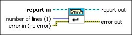
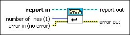

New Report Line VI
Owning Palette: Report Layout VIs
Requires: Base Development System
Starts a new line in the report.
This VI has no affect on Excel reports.

 Add to the block diagram Add to the block diagram |
 Find on the palette Find on the palette |
Owning Palette: Report Layout VIs
Requires: Base Development System
Starts a new line in the report.
This VI has no affect on Excel reports.

| Add to the block diagram |
Find on the palette |
 |
report in is a reference to the report whose appearance, data, and printing you want to control. Use the Create Report VI to generate this LabVIEW class object. |
 |
number of lines specifies how many lines the VI adds to the report. The default is 1. |
 |
error in describes error conditions that occur before this node runs. This input provides standard error in functionality. |
 |
report out is a reference to the report whose appearance, data, and printing you want to control. You can wire this output to other Report Generation VIs. |
 |
error out contains error information. This output provides standard error out functionality. |